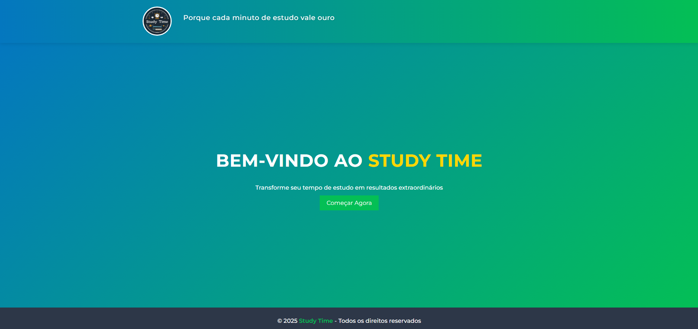
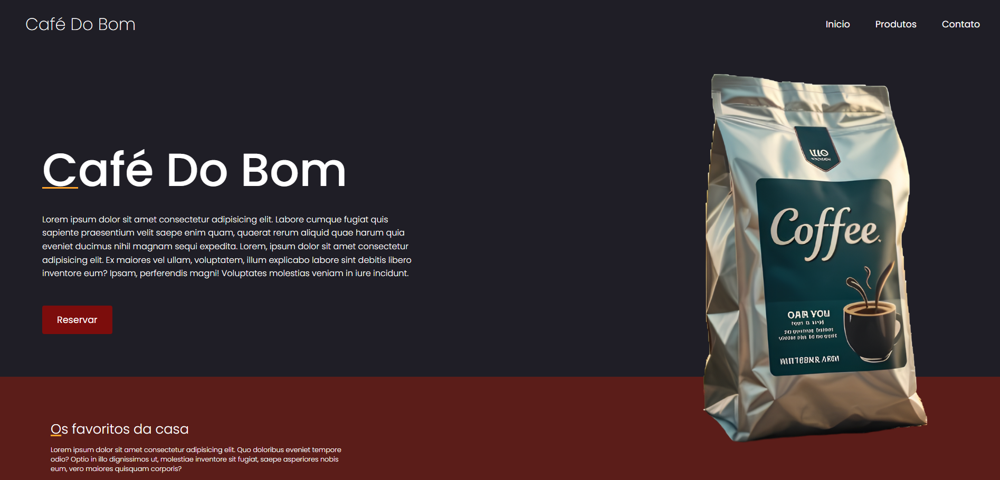
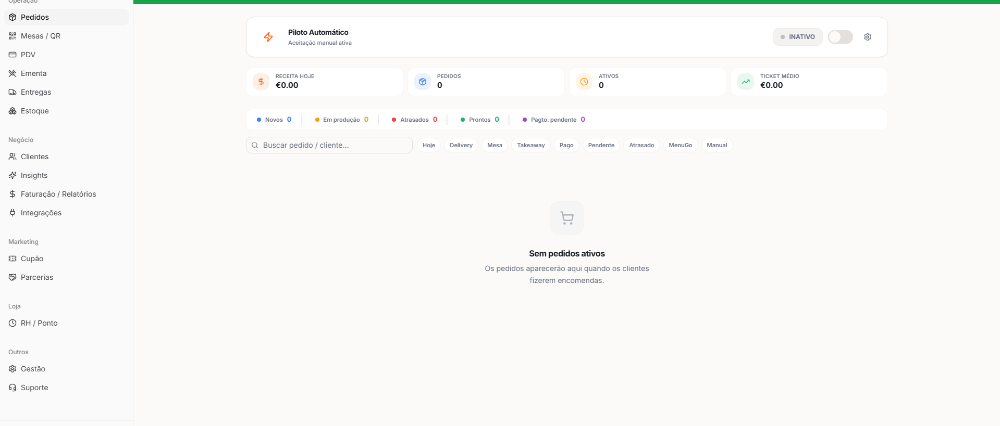

StudyTime
studytime.vercel.appAplicação web para organização e gerenciamento do tempo de estudo, desenvolvida com foco em produtividade e experiência do usuário.

Formado em Análise e Desenvolvimento de Sistemas, de Natal/RN, construindo aplicações do front ao banco de dados. Do atendimento ao cliente para a lógica de programação — a mesma vontade de resolver problema, agora em código.
Concluinte em Análise e Desenvolvimento de Sistemas pela UNINASSAU, com formação concluída em Informática e Sistemas e experiência real em desenvolvimento web — do HTML e CSS até integração com APIs e banco de dados.
Além da programação, passei os últimos anos em funções de suporte administrativo e atendimento ao cliente, o que me deu uma base sólida em organização, resolução de problemas e comunicação — habilidades que carrego para dentro de cada projeto que construo.
Hoje busco minha primeira oportunidade como Desenvolvedor Júnior ou Trainee, com vontade de aprender rápido, escrever código limpo e evoluir junto de um time.

Aplicação web para organização e gerenciamento do tempo de estudo, desenvolvida com foco em produtividade e experiência do usuário.

Landing page responsiva com design moderno para apresentação de marca e produto, priorizando usabilidade e interface intuitiva.

Sistema de delivery com fluxo de pedidos, controle de restaurantes e gestão da experiência do cliente, incluindo manutenção e evolução contínua da plataforma.
Estou aberto a oportunidades como desenvolvedor júnior ou trainee. Se meu perfil combina com o que você procura, me chama em qualquer um dos canais abaixo.